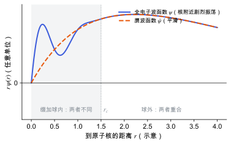

赝势与 PAW 方法
冻结芯近似、赝势与投影缀加波怎样把核附近剧烈振荡的波函数变得可计算。
直观阅读需要
- 原子的芯电子与价电子
- 平面波基组与截断能：平面波难以描述尖锐结构
完整推导还需要
- Kohn–Sham 密度泛函理论
- 线性算符与投影
只是提示，不需要先读完才能往下看。
直觉直观解释
价电子波函数在原子核附近必须和芯电子轨道正交，所以在核附近剧烈振荡。用平面波描述这种振荡需要非常高的截断能（见 平面波基组与截断能）。但化学键、结构、响应主要由价电子在原子之间的行为决定，核附近的细节影响不大。
两步简化：
- 冻结芯 (frozen core)：芯电子在不同化学环境中几乎不变，直接取孤立原子的芯电子，不再求解。
- 处理核附近的价电子： - 赝势 (pseudopotential)：在半径 r_c 以内，把真实的强势换成平缓的赝势，使赝波函数在 r_c 外与真实波函数相同、在 r_c 内平滑。只保留赝波函数。 - PAW (projector augmented wave)：同样用平滑波函数做计算，但保留一个线性变换，需要时可以把平滑波函数还原成全电子波函数。所以 PAW 能给出核附近的密度，同时维持低截断能 [Blöchl 1994]。

| 符号 | 是什么 | 图里对应 |
|---|---|---|
| r | 到原子核的距离 | 横轴 |
| \psi | 全电子（真实）价电子波函数 | 蓝色实线 |
| \tilde\psi | 平滑（赝）波函数，实际用平面波展开的量 | 橙色虚线 |
| r_c | 缀加球（截断）半径 | 灰色竖线与阴影区 |
定义与公式数学与推导
括号里的项只在各原子的缀加球内不为零，所以球外 \psi = \tilde\psi。球内，投影系数 \langle \tilde p^{a}_i|\tilde\psi_n\rangle 告诉我们平滑波函数含有多少第 i 个分波，然后把平滑分波“换回”全电子分波。
能量、密度等同样拆成“平面波部分 + 每个球内的全电子修正 − 平滑修正”，球内的积分在径向网格上做，不需要平面波。
和超软赝势的关系
超软赝势同样放宽了对赝波函数的约束（不要求模守恒），用广义本征值问题处理 [Vanderbilt 1990]。Kresse 与 Joubert 指出，超软赝势可以看作 PAW 的一种近似形式 [Kresse & Joubert 1999]。
在本研究线里的样子对应与边界
- VASP 的 POTCAR 就是 PAW 数据集：每种元素有几个版本（例如标准版、
_h硬版、_s软版、_sv/_pv把半芯态当价电子）。选择会影响所需截断能（POTCAR 中的ENMAX）和精度。 - β-甘氨酸的 C、N、O、H：常用标准版本。若要算对核附近敏感的量（例如精确的电场梯度），或者需要短键长下的精度，才考虑硬版本。分子晶体中 O–H、N–H 键短，可以把硬版本作为一次检查。
- 压电与介电：这些量主要由价电子在原子间的分布决定，PAW 的影响一般小于泛函和色散的影响；但换 POTCAR 后应重新做截断能收敛（见 收敛测试）。
常见坑对应与边界
- 不同计算混用 POTCAR：对比能量（例如多晶型排序）时，所有计算必须用同一组 POTCAR 和截断能。
- 截断能低于
ENMAX：多元素体系要取所有元素ENMAX的最大值，变胞或应力计算还要更高。 - 压缩很大的结构：缀加球重叠时 PAW 数据集可能失效，需要换更小 r_c 的硬版本。
检验自己对应与边界
参考资料
论文Blöchl 1994
P. E. Blöchl, Projector augmented-wave method, Phys. Rev. B 50, 17953 (1994)
PAW 方法的原始论文。
尚未实际查阅，目前只是拟查阅书目
论文Kresse & Joubert 1999
VASP 中 PAW 实现的依据。
尚未实际查阅，目前只是拟查阅书目
论文Vanderbilt 1990
尚未实际查阅，目前只是拟查阅书目
论文Payne et al. 1992
尚未实际查阅，目前只是拟查阅书目
分类电子结构理论 · 方法 · 状态：草稿